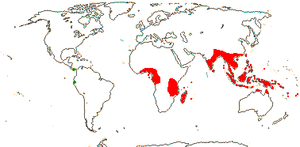

EMBRYOPSIDA Pirani & Prado
Gametophyte dominant, independent, multicellular, not motile, initially ±globular; showing gravitropism; acquisition of phenylalanine lysase [PAL], microbial terpene synthase-like genes +, triterpenoids produced by CYP716 enzymes, phenylpropanoid metabolism [lignans +, flavonoids + (absorbtion of UV radiation)], xyloglucans in primary cell wall, side chains charged; plant poikilohydrous [protoplasm dessication tolerant], ectohydrous [free water outside plant physiologically important]; thalloid, leafy, with single-celled apical meristem, tissues little differentiated, rhizoids +, unicellular; chloroplasts several per cell, pyrenoids 0; glycolate metabolism in leaf peroxisomes [glyoxysomes]; centrioles/centrosomes in vegetative cells 0, microtubules with γ-tubulin along their lengths [?here], interphase microtubules form hoop-like system; metaphase spindle anastral, predictive preprophase band + [with microtubules and F-actin; where new cell wall will form], phragmoplast + [cell wall deposition centrifugal, from around the anaphase spindle], plasmodesmata +; antheridia and archegonia jacketed, surficial; blepharoplast +, centrioles develop de novo, bicentriole pair coaxial, separate at midpoint, centrioles rotate, associated with basal bodies of cilia, multilayered structure + [4 layers: L1, L4, tubules; L2, L3, short vertical lamellae] (0), spline + [tubules from L1 encircling spermatid], basal body 200-250 nm long, associated with amorphous electron-dense material, microtubules in basal end lacking symmetry, stellate array of filaments in transition zone extended, axonemal cap 0 [microtubules disorganized at apex of cilium]; male gametes [spermatozoids] with a left-handed coil, cilia 2, lateral; oogamy; sporophyte multicellular, cuticle +, plane of first cell division transverse [with respect to long axis of archegonium/embryo sac], sporangium and upper part of seta developing from epibasal cell [towards the archegonial neck, exoscopic], with at least transient apical cell [?level], initially surrounded by and dependent on gametophyte, placental transfer cells +, in both sporophyte and gametophyte, wall ingrowths develop early; suspensor/foot +, cells at foot tip somewhat haustorial; sporangium +, single, terminal, dehiscence longitudinal; meiosis sporic, monoplastidic, MTOC [MTOC = microtubule organizing centre] associated with plastid, sporocytes 4-lobed, cytokinesis simultaneous, preceding nuclear division, quadripolar microtubule system +; wall development both centripetal and centrifugal, 1000 spores/sporangium, sporopollenin in the spore wall laid down in association with trilamellar layers [white-line centred lamellae; tripartite lamellae]; nuclear genome size [1C] <1.4 pg, main telomere sequence motif TTTAGGG, LEAFY and KNOX1 and KNOX2 genes present, ethylene involved in cell elongation; chloroplast genome with close association between trnLUAA and trnFGAA genes [precursors for starch synthesis], tufA gene moved to nucleus; mitochondrial trnS(gcu) and trnN(guu) genes +.
Many of the bolded characters in the characterization above are apomorphies of subsets of streptophytes along the lineage leading to the embryophytes, not apomorphies of crown-group embryophytes per se.
All groups below are crown groups, nearly all are extant. Characters mentioned are those of the immediate common ancestor of the group, [] contains explanatory material, () features common in clade, exact status unclear.
STOMATOPHYTES
Abscisic acid, L- and D-methionine distinguished metabolically; pro- and metaphase spindles acentric; sporophyte with polar transport of auxins, class 1 KNOX genes expressed in sporangium alone; sporangium wall 4≤ cells across [≡ eusporangium], tapetum +, secreting sporopollenin, which obscures outer white-line centred lamellae, columella +, developing from endothecial cells; stomata +, on sporangium, anomocytic, cell lineage that produces them with symmetric divisions [perigenous]; underlying similarities in the development of conducting tissue and of rhizoids/root hairs; spores trilete; shoot meristem patterning gene families expressed; MIKC, MI*K*C* genes, post-transcriptional editing of chloroplast genes; gain of three group II mitochondrial introns, mitochondrial trnS(gcu) and trnN(guu) genes 0.
[Anthocerophyta + Polysporangiophyta]: gametophyte leafless; archegonia embedded/sunken [only neck protruding]; sporophyte long-lived, chlorophyllous; cell walls with xylans.
Sporophyte well developed, branched, branching apical, dichotomous, potentially indeterminate; hydroids +; stomata on stem; sporangia several, terminal; spore walls not multilamellate [?here].
TRACHEOPHYTA†
Vascular tissue + [tracheids, walls with bars of secondary thickening].
EXTANT TRACHEOPHYTA / VASCULAR PLANTS
Sporophyte with photosynthetic red light response, stomata open in response to blue light; plant homoiohydrous [water content of protoplasm relatively stable]; control of leaf hydration passive; plant endohydrous [physiologically important free water inside plant]; (condensed or nonhydrolyzable tannins/proanthocyanidins +); xyloglucans with side chains uncharged [?level], in secondary walls of vascular and mechanical tissue; lignins +; stem apex multicellular, with cytohistochemical zonation, plasmodesmata formation based on cell lineage; tracheids +, in both protoxylem and metaxylem, G- and S-types; sieve cells + [nucleus degenerating]; endodermis +; leaves/sporophylls spirally arranged, blades with mean venation density ca 1.8 mm/mm2 [to 5 mm/mm2], all epidermal cells with chloroplasts; sporangia adaxial, columella 0; tapetum glandular; ?position of transfer cells; MTOCs not associated with plastids, basal body 350-550 nm long, stellate array in transition region initially joining microtubule triplets; suspensor +, shoot apex developing away from micropyle/archegonial neck [from hypobasal cell, endoscopic], root lateral with respect to the longitudinal axis of the embryo [plant homorhizic].
[MONILOPHYTA + LIGNOPHYTA]Sporophyte endomycorrhizal [with Glomeromycota]; growth ± monopodial, branching spiral; roots +, endogenous, positively geotropic, root hairs and root cap +, protoxylem exarch, lateral roots +, endogenous; G-type tracheids +, with scalariform-bordered pits; leaves with apical/marginal growth, venation development basipetal, growth determinate; sporangium dehiscence by a single longitudinal slit; cells polyplastidic, MTOCs diffuse, perinuclear, migratory; blepharoplasts +, paired, with electron-dense material, centrioles on periphery, male gametes multiciliate; chloroplast long single copy ca 30kb inversion [from psbM to ycf2]; mitochondrion with loss of 4 genes, absence of numerous group II introns; LITTLE ZIPPER proteins.
LIGNOPHYTA†
Sporophyte woody; stem branching lateral, meristems axillary; lateral root origin from the pericycle; cork cambium + [producing cork abaxially], vascular cambium bifacial [producing phloem abaxially and xylem adaxially].
SEED PLANTS†
Plants heterosporous; megasporangium surrounded by cupule [i.e. = unitegmic ovule, cupule = integument]; pollen lands on ovule; megaspore germination endosporic [female gametophyte initially retained on the plant].
EXTANT SEED PLANTS / SPERMATOPHYTA
Plant evergreen; nicotinic acid metabolised to trigonelline, (cyanogenesis via tyrosine pathway); microbial terpene synthase-like genes 0; primary cell walls rich in xyloglucans and/or glucomannans, 25-30% pectin [Type I walls]; lignin chains started by monolignol dimerization [resinols common], particularly with guaiacyl and p-hydroxyphenyl [G + H] units [sinapyl units uncommon, no Maüle reaction]; root stele diarch to pentarch, xylem and phloem originating on alternating radii, cork cambium deep seated; stem apical meristem complex [with quiescent centre, etc.], plasmodesma density in SAM 1.6-6.2[mean]/μm2 [interface-specific plasmodesmatal network]; eustele +, protoxylem endarch, endodermis 0; wood homoxylous, tracheids and rays alone, tracheid/tracheid pits circular, bordered; mature sieve tube/cell lacking functioning nucleus, sieve tube plastids with starch grains; phloem fibres +; cork cambium superficial; leaf nodes 1:1, a single trace leaving the vascular sympodium; leaf vascular bundles amphicribral; guard cells the only epidermal cells with chloroplasts, stomatal pore with active opening in response to leaf hydration, control by abscisic acid, metabolic regulation of water use efficiency, etc.; axillary buds +, exogenous; prophylls two, lateral; leaves with petiole and lamina, development basipetal, lamina simple; sporangia borne on sporophylls; spores not dormant; microsporophylls aggregated in indeterminate cones/strobili; grains monosulcate, aperture in ana- position [distal], primexine + [involved in exine pattern formation with deposition of sporopollenin from tapetum there], exine and intine homogeneous, exine alveolar/honeycomb; ovules with parietal tissue [= crassinucellate], megaspore tetrad linear, functional megaspore single, chalazal, sporopollenin 0; gametophyte ± wholly dependent on sporophyte, development initially endosporic [apical cell 0, rhizoids 0, etc.]; male gametophyte with tube developing from distal end of grain, male gametes two, developing after pollination, with cell walls; female gametophyte initially syncytial, walls then surrounding individual nuclei; embryo cellular ab initio, suspensor short-minute, embryonic axis straight [shoot and root at opposite ends; plant allorhizic], cotyledons 2; embryo ± dormant; chloroplast ycf2 gene in inverted repeat, trans splicing of five mitochondrial group II introns, rpl6 gene absent; whole nuclear genome duplication [ζ - zeta - duplication], two copies of LEAFY gene, PHY gene duplications [three - [BP [A/N + C/O]] - copies], 5.8S and 5S rDNA in separate clusters.
ANGIOSPERMAE / MAGNOLIOPHYTA
Lignans, O-methyl flavonols, dihydroflavonols, triterpenoid oleanane, apigenin and/or luteolin scattered, [cyanogenesis in ANA grade?], lignin also with syringyl units common [G + S lignin, positive Maüle reaction - syringyl:guaiacyl ratio more than 2-2.5:1], hemicelluloses as xyloglucans; root cap meristem closed (open); pith relatively inconspicuous, lateral roots initiated immediately to the side of [when diarch] or opposite xylem poles; origin of epidermis with no clear pattern [probably from inner layer of root cap], trichoblasts [differentiated root hair-forming cells] 0, hypodermis suberised and with Casparian strip [= exodermis]; shoot apex with tunica-corpus construction, tunica 2-layered; starch grains simple; primary cell wall mostly with pectic polysaccharides, poor in mannans; tracheid:tracheid [end wall] plates with scalariform pitting, wood parenchyma +; sieve tubes enucleate, sieve plate with pores (0.1-)0.5-10< µm across, cytoplasm with P-proteins, not occluding pores of plate, companion cell and sieve tube from same mother cell; ?phloem loading/sugar transport; nodes 1:?; dark reversal Pfr → Pr; protoplasm dessication tolerant [plant poikilohydric]; stomata brachyparacytic [ends of subsidiary cells level with ends of pore], outer stomatal ledges producing vestibule, reduction in stomatal conductance with increasing CO2 concentration; lamina formed from the primordial leaf apex, margins toothed, development of venation acropetal, overall growth ± diffuse, secondary veins pinnate, fine venation hierarchical-reticulate, (1.7-)4.1(-5.7) mm/mm2, vein endings free; flowers perfect, pedicellate, ± haplomorphic, protogynous; parts free, numbers variable, development centripetal; P +, ?insertion, members each with a single trace, outer members not sharply differentiated from the others, not enclosing the floral bud; A many, filament not sharply distinguished from anther, stout, broad, with a single trace, anther introrse, tetrasporangiate, sporangia in two groups of two [dithecal], each theca dehiscing longitudinally by a common slit, ± embedded in the filament, walls with at least outer secondary parietal cells dividing, endothecium +, cells elongated at right angles to long axis of anther; tapetal cells binucleate; microspore mother cells in a block, microsporogenesis successive, walls developing by centripetal furrowing; pollen subspherical, tectum continuous or microperforate, ektexine columellate, endexine lamellate only in the apertural regions, thin, compact, intine in apertural areas thick, pollenkitt +; nectary 0; carpels present, superior, free, several, ascidiate [postgenital occlusion by secretion], stylulus at most short [shorter than ovary], hollow, cavity not lined by distinct epidermal layer, stigma ± decurrent, carinal, dry; suprastylar extragynoecial compitum +; ovules few [?1]/carpel, marginal, anatropous, bitegmic, micropyle endostomal, outer integument 2-3 cells across, often largely subdermal in origin, inner integument 2-3 cells across, often dermal in origin, parietal tissue 1-3 cells across, nucellar cap?; megasporocyte single, hypodermal, functional megaspore lacking cuticle; female gametophyte lacking chlorophyll, not photosynthesising, four-celled [one module, nucleus of egg cell sister to one of the polar nuclei]; ovule not increasing in size between pollination and fertilization; pollen grains land on stigma, bicellular at dispersal, mature male gametophyte tricellular, germinating in less than 3 hours, pollen tube elongated, unbranched, growing between cells, growth rate (20-)80-20,000 µm/hour, apex of pectins, wall with callose, lumen with callose plugs, penetration of ovules via micropyle [porogamous], whole process takes ca 18 hours, distance to first ovule 1.1-2.1 mm; male gametes lacking cell walls, ciliae 0, siphonogamy; double fertilization +, ovules aborting unless fertilized; P deciduous in fruit; mature seed much larger than fertilized ovule, small [], dry [no sarcotesta], exotestal; endosperm +, cellular, development heteropolar [first division oblique, micropylar end initially with a single large cell, divisions uniseriate, chalazal cell smaller, divisions in several planes], copious, oily and/or proteinaceous, embryo short [<¼ length of seed]; plastid and mitochondrial transmission maternal; Arabidopsis-type telomeres [(TTTAGGG)n]; nuclear genome size [1C] <1.4 pg [mean 1C = 18.1 pg, 1 pg = 109 base pairs], whole nuclear genome duplication [ε/epsilon event]; ndhB gene 21 codons enlarged at the 5' end, single copy of LEAFY and RPB2 gene, knox genes extensively duplicated [A1-A4], AP1/FUL gene, palaeo AP3 and PI genes [paralogous B-class genes] +, with "DEAER" motif, SEP3/LOFSEP and three copies of the PHY gene, [PHYB [PHYA + PHYC]]; chloroplast chlB, -L, -N, trnP-GGG genes 0.
[NYMPHAEALES [AUSTROBAILEYALES [[CHLORANTHALES + MAGNOLIIDS] [MONOCOTS [CERATOPHYLLALES + EUDICOTS]]]]]: wood fibres +; axial parenchyma diffuse or diffuse-in-aggregates; pollen monosulcate [anasulcate], tectum reticulate-perforate [here?]; ?genome duplication; "DEAER" motif in AP3 and PI genes lost, gaps in these genes.
[AUSTROBAILEYALES [[CHLORANTHALES + MAGNOLIIDS] [MONOCOTS [CERATOPHYLLALES + EUDICOTS]]]]: phloem loading passive, via symplast, plasmodesmata numerous; vessel elements with scalariform perforation plates in primary xylem; essential oils in specialized cells [lamina and P ± pellucid-punctate]; tension wood + [reaction wood: with gelatinous fibres, G-fibres, on adaxial side of branch/stem junction]; tectum reticulate; anther wall with outer secondary parietal cell layer dividing; nucellar cap + [character lost where in eudicots?]; 12BP [4 amino acids] deletion in P1 gene.
[[CHLORANTHALES + MAGNOLIIDS] [MONOCOTS [CERATOPHYLLALES + EUDICOTS]]] / MESANGIOSPERMAE: benzylisoquinoline alkaloids +; sesquiterpene synthase subfamily a [TPS-a] [?level], polyacetate derived anthraquinones + [?level]; outer epidermal walls of root elongation zone with cellulose fibrils oriented transverse to root axis; P more or less whorled, 3-merous [?here]; pollen tube growth intra-gynoecial; extragynoecial compitum 0; carpels plicate [?here]; embryo sac bipolar, 8 nucleate, antipodal cells persisting; endosperm triploid.
[MONOCOTS [CERATOPHYLLALES + EUDICOTS]]: (extra-floral nectaries +); (veins in lamina often 7-17 mm/mm2 or more [mean for eudicots 8.0]); (stamens opposite [two whorls of] P); (pollen tube growth fast).
[CERATOPHYLLALES + EUDICOTS]: ethereal oils 0.
EUDICOTS: (Myricetin, delphinidin +), asarone 0 [unknown in some groups, + in some asterids]; root epidermis derived from root cap [?Buxaceae, etc.]; (vessel elements with simple perforation plates in primary xylem); nodes 3:3; stomata anomocytic; flowers (dimerous), cyclic; protandry common; K/outer P members with three traces, ("C" +, with a single trace); A ?, filaments fairly slender, anthers basifixed; microsporogenesis simultaneous, pollen tricolpate, apertures in pairs at six points of the young tetrad [Fischer's rule], cleavage centripetal, wall with endexine; G with complete postgenital fusion, stylulus/style solid [?here]; seed coat?
[PROTEALES [TROCHODENDRALES [BUXALES + CORE EUDICOTS]]]: (axial/receptacular nectary +).
[TROCHODENDRALES [BUXALES + CORE EUDICOTS]]: benzylisoquinoline alkaloids 0; euAP3 + TM6 genes [duplication of paleoAP3 gene: B class], mitochondrial rps2 gene lost.
[BUXALES + CORE EUDICOTS]: mitochondrial rps11 gene lost.
CORE EUDICOTS / GUNNERIDAE: (ellagic and gallic acids +); leaf margins serrate; compitum + [one position]; micropyle?; γ whole nuclear genome duplication [palaeohexaploidy, gamma triplication], PI-dB motif +, small deletion in the 18S ribosomal DNA common.
[ROSIDS ET AL. + ASTERIDS ET AL.] / PENTAPETALAE: root apical meristem closed; (cyanogenesis also via [iso]leucine, valine and phenylalanine pathways); flowers rather stereotyped: 5-merous, parts whorled; P = calyx + corolla, the calyx enclosing the flower in bud, sepals with three or more traces, petals with a single trace; stamens = 2x K/C, in two whorls, internal/adaxial to the corolla whorl, alternating, (numerous, but then usually fasciculate and/or centrifugal); pollen tricolporate; G [5], G [3] also common, when [G 2], carpels superposed, placentation axile, style +, stigma not decurrent; compitum +; endosperm nuclear; fruit dry, dehiscent, loculicidal [when a capsule]; RNase-based gametophytic incompatibility system present; floral nectaries with CRABSCLAW expression; (monosymmetric flowers with adaxial/dorsal CYC expression).
[DILLENIALES [SAXIFRAGALES [VITALES + ROSIDS s. str.]]]: stipules + [usually apparently inserted on the stem].
[SAXIFRAGALES [VITALES + ROSIDS]] / ROSANAE Takhtajan / SUPERROSIDAE: ??
[VITALES + ROSIDS] / ROSIDAE: anthers ± dorsifixed, transition to filament narrow, connective thin. Back to Main Tree.
Age. Using penalized likelihood, Hengcheng Wang et al. (2009) suggested that the Vitaceae/rest of rosid split occurred (115-)111(-109) or (96-)92(-88) m.y.a.; two Bayesian relaxed clock estimates were between 119 and 113 m.y. Ages of (132-)125(-118) or (105-)101(-97) m.y. are offered by Bell et al. (2010). Wikström et al. (2001) suggested an age of (121-)117, 108(-104) m.y., Magallón and Castillo (2009) estimated ages of ca 112.6 to 113.2 m.y., Argout et al. (2011) gave a date of ca 123 m.y., and Magallón et al. (2013) an age of around 108.7 m.y.; 100.6-97.6 m.y. is the estimate in Xue et al. (2012), around 111-105.6 m.y. in Naumann et al. (2013), about 123.5 m.y. in Hohmann et al. (2015) and ca 117.5 m.y. in Tank et al. (2015: Table S2).
Evolution. Ecology & Physiology. This node is notable for its relatively high ratio of leaf mass per area (SLA) (Cornwell et al. 2014).
Plant-Animal Interactions. Overall herbivory in this clade is relatively high (Turcotte et al. 2014: see caveats).
Genes & Genomes. For the possible palaeohexaploidy of Vitales, see Jaillon, Aury et al. (2007). However, it now seems that this genome triplication occurred in the common ancestor of the [rosid + asterid] clade, or even in the immediate ancestor of the core eudicots as a whole; for further information, see the core eudicots. For genome synteny, transposition, etc., in this clade, see Woodhouse et al. (2011).
Chemistry, Morphology, etc. For exudates, see Lambert et al. (2013), and for disc nectaries, see Endress (2010c).
Phylogeny. Molecular data do not link Vitaceae unambiguously with any other single core eudicot order, and they are definitely not nested within any order. They were placed sister to rosids, but with only moderate support by D. Soltis et al. (2000), and even this moderate support weakened in a subsequent four-gene analysis (D. Soltis et al. 2003a); however, Jansen et al. (2006a, b) using complete chloroplast genome sequences found quite strong support for this position (note that members of Berberidopsidales, Dilleniales, Santalales and Saxifragales were not included: see also Ruhlman et al. 2007; Jansen et al. 2007; Moore et al. 2007; M. Sun et al. 2016). Hilu et al. (2003: matK analysis [incomplete sequence] alone) suggest relationships between Vitales and Dilleniales (only moderate support in parsimony analysis, but 100% posterior probability in Bayesian analyses), the combined clade being just above Malpighiales and below Saxifragales in a pectinate tree of major clades within the core eudicots. Although this relationship was not recovered in the analysis of the matK gene by Worberg et al. (2007), the two do have a similar and rather distinctive testa anatomy (see also Kubitzki 2006a). See the Dilleniales and Saxifragales pages for further discussions on the relationships of Vitales. The placement adopted here is somewhat tentative.
Vessel elements with simple perforation plates; tension wood 0; sieve tube plastids with protein crystalloids and starch; nodes multilacunar [3-7:3-7]; raphide bundles +, raphides twinned; pearl glands + [food bodies]; leaves compound; C protective in bud; stamens = and opposite petals, from a common primordium; nectary gynoecial; style short; ovules 2/carpel, apotropous, micropyle?; fruit a berry, K deciduous; seeds perichalazal, ± surrounded by vascular bundle, ± ruminate and with Y-shaped dorsal infold; testa multiplicative, exotesta fleshy, mesotesta 2-17 layers across, endotesta 2-5-layered, lignified, crystalliferous, exotegmen (crossed) tracheidal, endotegmen ± mucilaginous; embryo minute; loss of RPB2 d copy. - 1 family, 14 genera, 850 species.
Note: Boldface denotes possible apomorphies, (....) denotes a feature common in the clade, exact status uncertain, [....] includes explanatory material. Note that the particular node to which many characters, particularly the more cryptic ones, should be assigned is unclear. This is partly because homoplasy is very common, in addition, basic information for all too many characters is very incomplete, frequently coming from taxa well embedded in the clade of interest and so making the position of any putative apomorphy uncertain. Then there are the not-so-trivial issues of how character states are delimited and ancestral states are reconstructed (see above).
Includes Vitaceae.
Synonymy: Leeales de Candolle - Vitanae Reveal
VITACEAE Jussieu, nom. cons. Back to Vitales
Ellagic acid, myricetin +; (cork cambium deep-seated); cambium storied; wood with broad rays; nodes often swollen; petiole with ring of bundles; stomata variable; branching from previous flush; leaves palmately compound or -veined, lamina vernation conduplicate, teeth glandular; inflorescences terminal, branched, ± cymose; flowers small, <1 cm across, (3-7)-merous; K becoming connate, C valvate; tapetal cells 3-4-nucleate; pollen 3-celled; ovary at least apically unilocular [± strongly intrusive parietal], stigma capitate or -fid, dry; ovules with nucellar cap, hypostase +, placental obturator + or 0; prominent raphe and chalazal knot, seed-coat ingrowths delimiting raphe; endotesta palisade, exotegmen with spiral thickenings, endotegmen tanniniferous.
14[list]/850 - 2 main groups below. Pantropical and (warm) temperate.
Age. Wikström et al. (2001) suggested a crown group age for Vitaceae of (97-)92, 78(-73) m.y.a., Magallón and Castillo (2009) estimated ages of ca 90.75 m.y., while ca 95 m.y.a. was the age in Wen et al. (2013) and ca 72 m.y. in N. Adams et al. (2016).
1. Leeoideae Burmeister
Herbs to trees; raphides barbed; leaves spiral, to twice compound, teeth with small glandular apex, one lateral vein continues its course above the tooth, stipules borne along petiole margin, sheathing; C basally connate; stamens basally adnate to corolla, anthers becoming connivent; nectary with very large lobes alternating with A and becoming recurved; G [3 (4)], (semi-inferior), odd member abaxial, secondary septae +; micropyle bistomal, outer integument 4-5 cells across, inner integument ca 2 cells across, parietal tissue ca 6 cells across, nucellar cap ca 2 cells across; seed-coat ingrowth at antiraphe, also paired, lateral, rarely raphides in the seed coat, palisade ca 1-4-layered, mesotegmic cells divide once, expand, then collapse; n = (10-)12.
1/34. Most Indo-Malesian, few Africa and Madagascar (map: from Ridsdale 1976; Trop. Afr. Fl. Pl. Ecol. Distr. 5. 2010; Australia's Herbarium i.2013; fossils [green] from Manchester et al. 2012b). [Photo - Flower.]
Age. Moline et al. (2013: HPD) estimate the age of crown group Leeoideae to be (86.2-)72.1(-65.0) m.y, while ca 17.3 m.y. is the age in N. Adams et al. (2016: sampling).
Synonymy: Leeaceae Dumortier, nom. cons.
2. Vitoideae Eaton

Lianes (stout trees, herbs; rootstock swollen), climbing by leaf-opposed branch tendrils; vascular traces arising 3 internodes or so before entering leaf; raphides smooth; (cuticle waxes as tubular rodlets); (more than one bud/node); leaves two-ranked, (spiral), (simple), (unequal pinnate), lamina teeth with gland broadening distally and with foramen, veins from above and below, (stipules adaxially connate), (not vascularized); inflorescences leaf-opposed (terminal); (K lacking vascular traces), (C connate by papillae and calyptrate); (tapetum amoeboid); (pollen binucleate); nectary annular or lobes alternating with A, (investing G; 0); G [2], collateral or superposed, (placentation parietal), (style long), (hollow); micropyle endo(bi)stomal, outer integument 4-7 cells across, inner integument (1 - Vitis)2-3(-4) cells across, parietal tissue 3-20 cells across, in radial rows, nucellar cap 2-10 cells across; seed coat ingrowths at raphe [seed ± T-shaped in transverse section]; raphides in the seed coat, palisade 1-2 layered, (cells isodiametric - Cissus group); n = 10-16, 19, 20.
15/825. Pantropical and (warm) temperate (map: from Wickens 1976; Meusel et al. 1978; Morley & Toelken 1983; Lombardi 2000; Fl. China 12. 2007; Trop. Afr. Fl. Pl. Ecol. Distr. 5. 2010; Australia's Virtual Herbarium xii.2012; Fl. Pakistan). [Photo - Flower.]
Age. The age of crown-group Vitoideae is ca 91 m.y.a. (Wen et al. 2013), ca 87 m.y. (X.-Q. Liu et al. 2015) or ca 66 m.y. (N. Adams et al. 2016: Appendix S8).
2A. [Ampelopsis, etc.]: ?
Age. Ca 60 m.y.o. is the approximate age of this clade (X.-Q. Liu et al. 2015).
Synonymy: Ampelopsidaceae Kosteletzky
[Cissus. Cayratia etc.] + [Ampelocissus, Parthenocissus, etc.]: (leaves spiral).
Age. The approximate age of this clade is 83 m.y. (X.-Q. Liu et al. 2015).
2B. [Cissus; Cayratia etc.]: flowers usu. 4-merous; (K not covering bud- - Cyphostemma).
Cissus (350), Cyphostemma, Tetrastigma (95), Cayratia (65).
Age. This clade is around 79 m.y.o. (X.-Q. Liu et al. 2015).
Synonymy: Cissaceae Drejer
2C. [Ampelocissus, Parthenocissus, etc.]: inflorescence a thyrse [first- and second-order branches racemose].
Ampelocissus (100), Vitis (65).
Age. The crown-group age of this clade is (82-)70.5(-57.9) m.y. (X.-Q. Liu et al. 2015).
Synonymy: Pterisanthaceae J. Agardh
Evolution: Divergence & Distribution. Fossil leaves assigned to Vitoideae are reported from the Late Cretaceous (see R. Burham's Fossil Record of Climbers for references), although wood (Wheeler & LaPasha 1994; Smith et al. 2012) and the distinctive seeds of the subfamily are usually found somewhat later. Seeds are quite common in Caenozoic deposits of both North America and Europe, and there are more than twelve seeds per berry in some of these fossils, which suggests a gynoecium unlike that of extant Vitoideae (Manchester & Chen 2009). Fossil woods also have unexpected character combinations (Wheeler & LaPasha 1994). Fruits that can be placed in crown-group Vitaceae have recently been found in the Deccan Traps in intertrappean cherts and dated to somewhere around/a little before the K/C boundary ca 66 m.y.a. (Manchester et al. 2013: to 6 seeds/fruit).
Ampelocissus has been found in younger Oligocene deposits 30-28.5 m.y. old from north coastal Peru; the nearest current localities of the genus are in Central America (Manchester et al. 2012a, b). Even more notably, fossils of seeds from the Late Eocene of Panama (perhaps 40-37 m.y.o.) have been identified as c.f. Leea (Herrera et al. 2012: identity confirmed - Manchester et al. 2013), and Leea has also been found in younger Oligocene deposits 30-28.5 m.y.o. from north coastal Peru (Manchester et al. 2012a, b). Leea is currently Old World in its distribution.
X.-Q. Liu et al. (2012) suggest ages for various clades within Cissus s.l. (the three clades mentioned below) as does N. Adams et al. (2016: Appendix S8, S9; ages throughout the family, but especially African Cissus, while L. Lu et al. gives (2013) ages for clades in the Cayratia area; the transcriptome phylogeny of Wen et al. (2013) and the Vitis-centred tree of X.-Q. Liu et al. (2015) are also dated.
Ecology & Physiology. Vitaceae are a major clade of vines/lianes - perhaps 800 species of them. All are tendrillate and some have adhesive pads on the ends of the tendrils, and Steinbrecher et al. (2011) describe how these pads may function and the possible role of small hooks on the shoots as mechanoreceptors in Parthenocissus, and there also seem to be spirally coiled hairs; for further details of the biomechanics, etc., of climbing here, see see Rowe and Speck (2015; additional references in Schnitzer et al. 2015). Fukano (2017) suggests that vine tendrils in Cayratia japonica use contact chemoreception - specifically, sensing oxalate, and Vitaceae tend to have large amounts of calcium oxalate - in order to avoid coiling around the leaves of conspecifics. Vitoideae lianes may develop quite high root pressures (Fisher et al. 1997) in the spring that may help repair embolisms in the xylem, and this may facilitate the ability of genera like Vitis to grow in more temperate climates where lianes otherwise tend to be uncommon (Tibbetts & Ewers 2000; Schnitzer 2005). However, recent work suggests that embolism formation and refilling may be controlled by the activity of living cells around the vessels (Knipfer et al. 2016) and/or lipid surfactants in the xylem that i.a. coat nanobubbles, so preventing the formation of full-fledged embolisms (Schenk et al. 2017). Species of Vitis as it were drain their pipes during the winter, the huge vessels - up to 0.5 mm across and 8 m long - being air-filled then, but they fill with water during the spring (Sperry et al. 1987).
In drier parts of Africa there are a number of non-climbing species of Cissus s.l. with rather grotequely swollen stems (but with flaky bark); crassulacean acid metabolism has been reported from such species (Virzo do Santo & Bartoli 1996).
Pollination Biology. The Malesian Pterisanthes (= Ampelocissus) has flattened red to purplish inflorescence axes on which the flowers and fruits are scattered.
Plant-Animal Interactions. Caterpillars of some lepidoptera are found on Vitaceae and Onagraceae alone (Forbes 1956) - and both contain raphides.
Tetrastigma in West Malesia is the only host of the giant parasite Rafflesia (Rafflesiaceae, Malpighiales), and at least some other Rafflesiaceae have this genus as their host. Some genes of Tetrastigma are expressed in the parasite and codon usage properties of many other Rafflesia genes are like those of its host, a degree of integration of two genomes unknown in any other host-parasite association (Xi et al. 2012a). Dating estimates are somewhat in conflict. P. Chen et al. (2011b: HPD) suggest ages of (65.3-)50.6(-36.4) m.y. for stem Tetrastigma, (49.3-)36.9(-25.7) m.y. for the crown group, while ages in Lu et al. (2013) are somewhat older, at (67.7-)57.4(-47.4) and (59.4-)47.6(-36.4) m.y. respectively, both sets of estimates being well before the origin of crown group Rafflesia (for which, see Bendiksby et al. 2010). However, if crown group Rafflesiaceae are (95.9-)81.7(-69.5) m.y. old (Bendiksby et al. 2010) and the family is always associated with Tetrastigma...
Vegetative Variation. The tendrils of Vitoideae are stem structures, and some are replaced by inflorescences in fertile shoots, and structures that are part tendril-part inflorescences are not uncommon (Calonje et al. 2002; Carmona et al. 2008 for development). Floral meristem genes studied are expressed in inflorescences and tendrils, or inflorescences alone, but not or hardly in leaves (N. Zhang et al. 2015a). There has been much discussion as to whether the inflorescence/tendril is an evicted terminal shoot or develops from an axillary bud (Wilson et al. 2002 and references). It arises from the flank of the terminal meristem opposite a leaf primordium (Gerrath & Posluszny 2007); Shah and Dave (1970) thought that the tendril was an extra-axillary lateral branch. In some species not all leaves have axillary buds, and in Vitoideae the basic construction of the stem consists of a three-node repeating unit (e.g. Gerrath et al. 1998, 2001; Gerrath & Posluszny 1994 and references), perhaps an apomorphy for the subfamily. The vascular supply to the leaf is complex, partly because it starts so far down the stem below the leaf it innervates, and Gerrath et al. (2001) noted an asymmetry in the vascular traces supplying the leaf, the midvein always coming from the ventral/abaxial vascular sympodium - remember, the leaves are two-ranked - the two sympodia each supplying the same number of lateral traces. However, depending on the species, this rather oversimplifies the situation.
Pterisanthes, embedded in Ampelocissus, has remarkable flattened coloured inflorescence axes on which the flowers are borne. These axes represent inflorescences with two orders of racemose branching, as in other Ampelocissus, but with lamellate outgrowths and largely sessile flowers (Ickert-Bond et al. 2015c).
Genes & Genomes. Murat et al. (2015b) suggest the ancestral chromosome number for Vitis - and perhaps a larger clade - is x = 19.
Vitis, at least, has a massive mitochondrial genome largely because of the expansion of intergenic spacers; some DNA from the mitochondrion may have migrated to the nucleus - very unusual (Goremykin et al. 2009a).
Economic Importance. See Terral et al. (2010) for the early history of the domestication of the grape. Wild species of Vitis are dioecious, cultivated plants have perfect flowers (Carmona et al. 2008).
Chemistry, Morphology, etc. In temperate Vitaceae there is pronounced vessel dimorphism while in tropical members of the family there is often distinctive cambial structure and hence secondary thickening patterns. The raphides of Vitaceae are twinned, square in transverse section, and like an arrow in longitudinal section (Cody & Horner 1983; Horner & Wagner 1995). Food bodies, often called pearl glands, are common on the surface of the plant. They are multicellular, with a multiseriate stalk, sometimes with a stoma on the swollen head, and the central parenchymatic cells accumulate oils and sugars (Pavia et al. 2009).
Prophylls are sometimes shown as being adaxial, or both lateral and adaxial within a single bud (Gerrath & Posluszny 2007).
Flowers have a common stamen-petal primordium. There is considerable variation in nectary morphology, from enveloping the ovary and forming little projections on top to being absent. Although Leea lacks an obvious nectary like that of Vitis, etc., developmental data show that the lobes alternating with the stamens are comparable with the gynoecial nectary of Vitoideae, and it is vascularized from the gynoecium (Gerrath et al. 1990, 2001). Since the part of the tube alternating with the stamens in Leea is supplied by several traces, Nair (1968) thought that it might represent a number of stamens, however, it is best thought of s a gynoecial nectary. The ovary has been described as being "anatomically parietal" (Brizicky 1965, for references); in fact, the ovary is at least apically unilocular, with fully parietal placentation in some Cyphostemma (Ickert-Bond et al. 2014a, see also 2014c). The egg apparatus of Cissus is reported to lie outside the ovule (Nair 1970 for references). For the distinctively ruminate seeds of the family, see Periasamy (1962a).
Some additional information is taken from Lombardi (2000), Timmons (2006), Wen (2006) and Gerrath et al. (2015), all general; for vascular anatomy, see Wheeler and LaPasha (1994), for nodal anatomy and stipules, see Shah (1959), for leaf teeth, Hickey and Wolfe (1975), for floral development, see Gerrath and Posluszny (1989 and references - Vitoideae), Timmons et al. (2007: some Vitoideae, useful table), and Gerrath et al. (1990: Leeoideae), for nectaries, see Erbar (2014), for embryology, etc., see Nair (1970), Nair and Nambisan (1957), and Nair and Bajaj (1966), for ovules and seeds, see Berlese (1892), and for seed anatomy in extant and fossil taxa, see Chen and Manchester (2007, 2011).
Phylogeny. Ingrouille et al. (2002) in a study of rbcL phylogeny considered in the context of morphological variation found little strong support for clades within Vitaceae. Subsequent studies using more genes (e.g. Soejima & Wen 2006) find somewhat more resolution, although support values and relationships of the clades other than the Cyphostemma-Cayratia-Tetrastigma clade were often still rather uncertain (Rossetto et al. 2002; Wen et al. 2007; Wen 2008; Chen et al. 2011; Trias-Blasi et al. 2012: Leea placed sister to Dillenia without comment, but see rooting; X.-Q. Liu et al. 2012). Ren et al. (2011) found two main clades in Vitoideae, one included species with 4-merous flowers (e.g. Cayratia, Cissus, Tetrastigma), the other, species with 5-merous flowers; within these clades, especially the former, there is a fair bit of well-supported phylogenetic structure that is correlated with names in current use. However, poly/paraphyly is also obvious, e.g. Cissus, Tetrastigma/Cayratia (Rossetto et al. 2007). Liu et al. (2012) found six well supported clades, one the Cyphostemma-Tetrastigma clade again, three clades including species of Cissus (two entirely so), and the final two, which may form a single clade, include species of Vitis et al. and Parthenocissus et al.. In a nuclear transcriptome study, relationships were [[Ampelocissus + Rhoicissus] [[Vitis + Parthenocissus] [Cissus [Cyphostemma-Tetrastigma]]]] (Wen et al. 2013). This basic structure, [[Ampelocissus + Rhoicissus] [[[Vitis + Ampelocissus] [Parthenocissus + Yua]] [[Cissus [Cyphostemma-Tetrastigma]]], is holding up, although support along the backbone within e.g. the [Vitis + Ampelocissus] clade could be strengthened (N. Zhang et al. 2015b: all three compartments give largely the same topology; Ickert-Bond et al. 2015c; N. Adams et al. 2016; esp. X.-Q. Liu et al. 2015).
Within the Cyphostemma-Tetrastigma clade, there are five major clades; Cayratia itself has three main clades and is paraphyletic, and Tetrastigma is sister to one of the Cayratia clades (Lu et al. 2013; see also Rossetto et al. 2007). The distinctive Pterisanthes turns out to be polyphyletic and embedded within Ampelocissus (X.-Q. Liu et al. 2015). For the phylogeny of Tetrastigma, host of Rafflesia, see P. Chen et al. (2011a). Vitis is monophyletic and the species hybridize (Tröndle et al. 2010); the small subgenus Muscadinia, from the New World, is sister to the other species which are from both the Old and New Worlds (X.-Q. Liu et al. 2015). See Rodrigues et al. 2014 for South American Cissus and Adams et al. (2016: inc. early Miocene fossils) for African Cissus in particular.
Classification. Although Vitis and relatives and Leea are morphologically distinguishable, there are numerous features that unite the two and they are sister taxa in all phylogenetic studies; inclusion in a single family seems reasonable. The wood anatomy of Leea and Rhoicissus in particular is very similar.
Generic limits in Vitoideae need attention, for example, species of Cissus occur all over the tree, while Tetrastigma, although monophyletic, is embedded in Cayratia (e.g. P. Chen et al. 2011b).
Previous Relationships. The affinities of Vitaceae have long been uncertain. They were often associated with Rhamnaceae, since both have stamens opposite the petals, and Takhtajan (1997) placed them near Proteanae, in his Rosidae; Proteanae also have stamens opposite their tepals, but are otherwise very different.
![[Photo - Flower.]](javascript:showImage('http://mobot.mobot.org/cgi-bin/search_vast?w3till=MOA-04207_001.jpg',600,500)){kind=link}
![[Photo - Flower.]](javascript:showImage('http://mobot.mobot.org/cgi-bin/search_vast?w3till=MOA-04342_001.jpg',600,500)){kind=link}